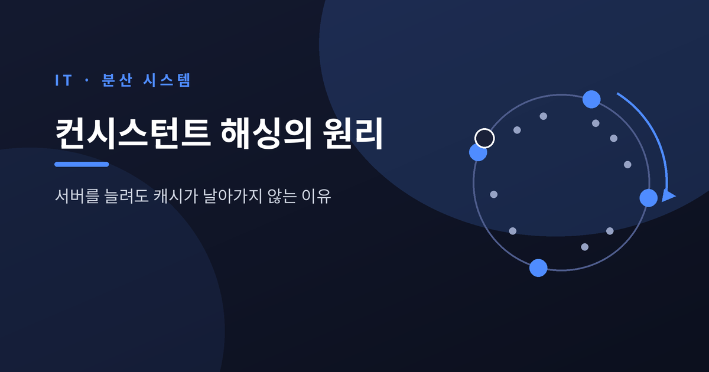
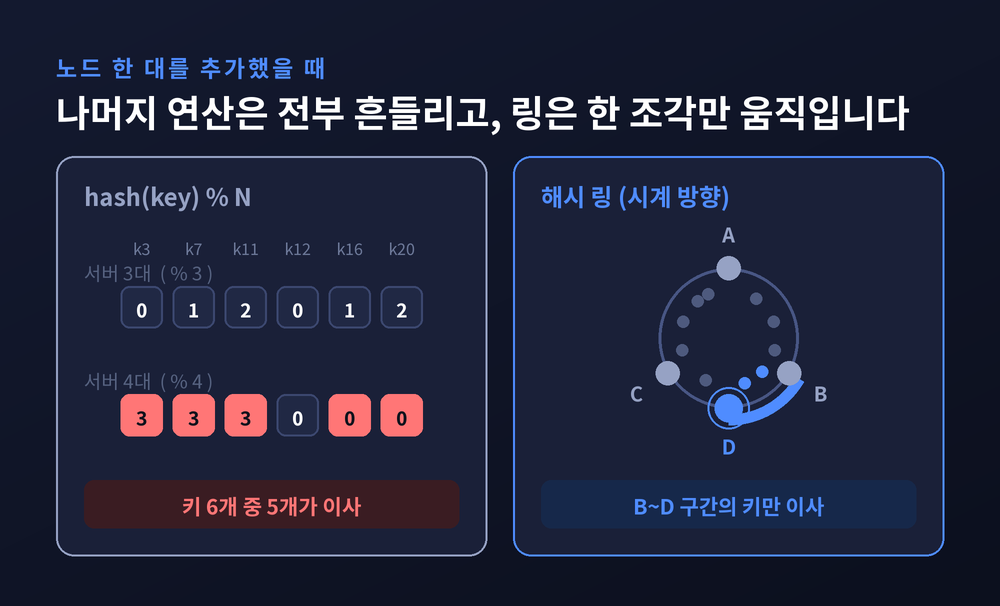
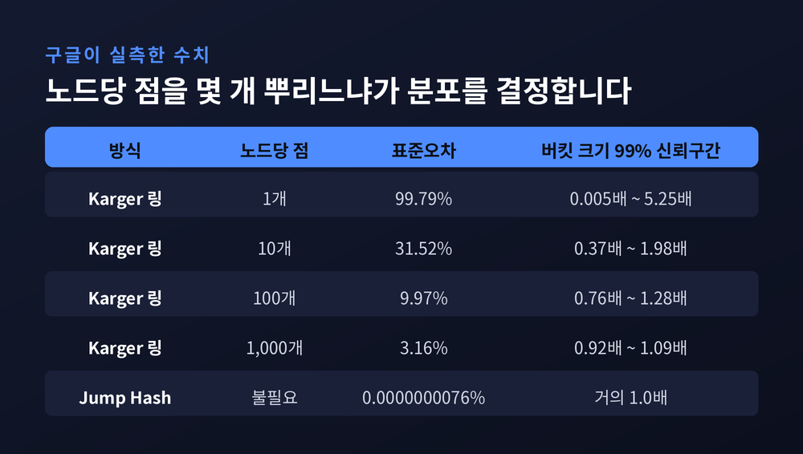
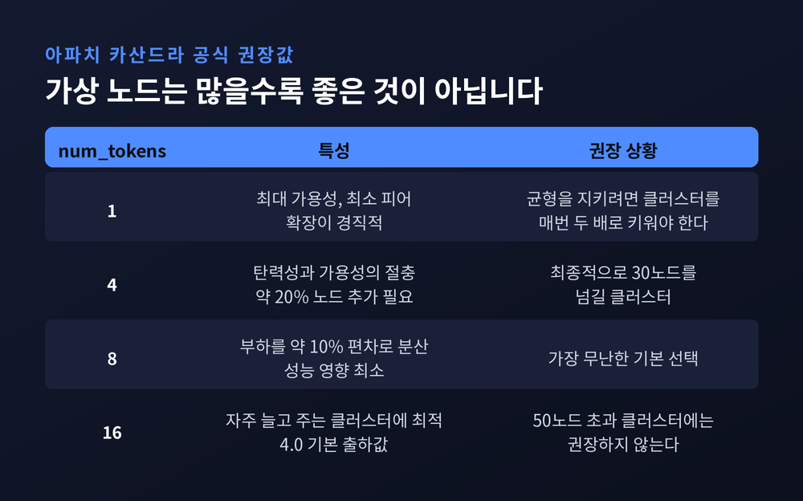
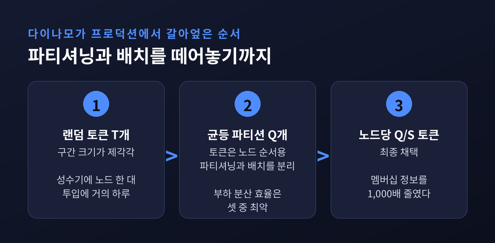
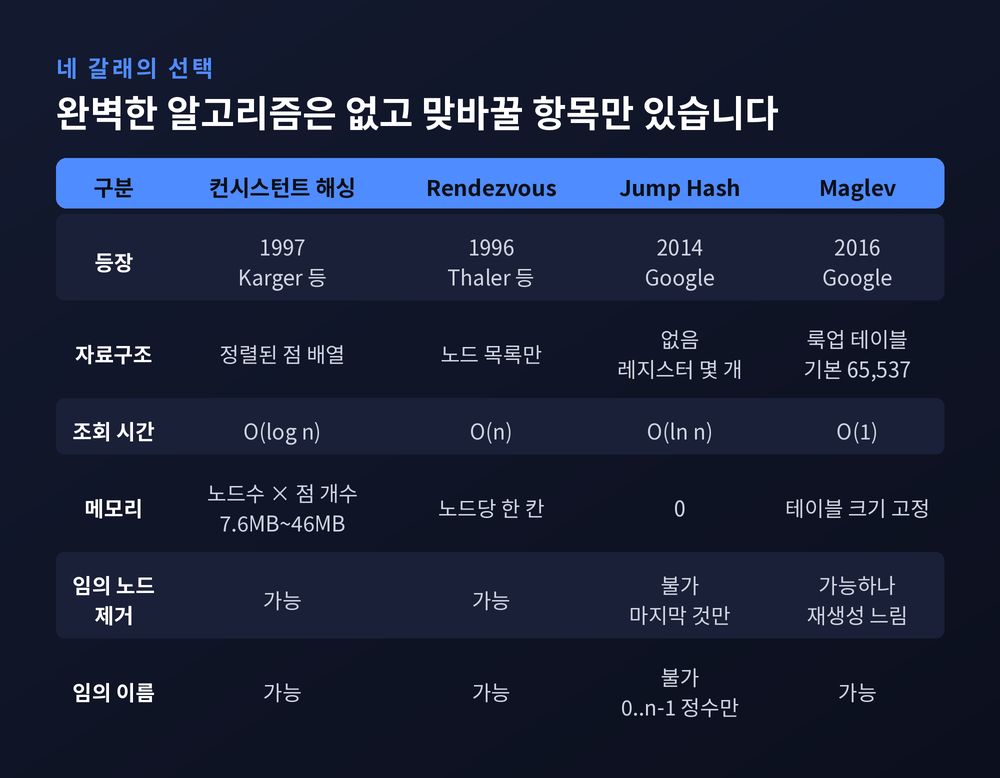
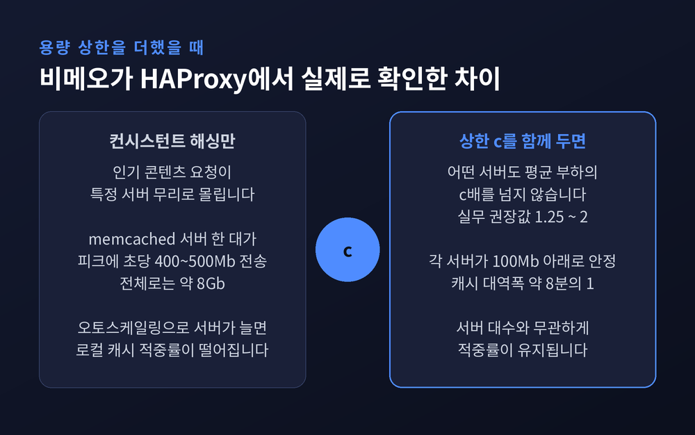

컨시스턴트 해싱 원리 — 서버를 늘려도 캐시가 날아가지 않는 이유

이번 글에서는 컨시스턴트 해싱(Consistent Hashing)을 정리해 보겠습니다. 분산 캐시와 샤딩에서 서버를 한 대 추가했을 뿐인데 캐시가 통째로 무효화되는 일을 막아주는 기법입니다. 해시 링의 원리부터 가상 노드, 재배치 비율, 실제 적용 사례, 그리고 이 구조가 끝내 풀지 못하는 한계까지 차례로 살펴보겠습니다.
세 줄 요약
- 나머지 연산으로 키를 나누면 서버 수가 바뀔 때 거의 모든 키가 이사합니다. 컨시스턴트 해싱은 이동량을 K/N 수준으로 묶어둡니다.
- 노드를 링 위 한 점에만 두면 부하가 심하게 기웁니다. 그래서 노드 하나를 여러 점으로 쪼개는 가상 노드를 씁니다.
- 다만 인기 키 하나가 몰리는 핫스팟은 가상 노드로 풀리지 않습니다. 용량 상한을 두는 별도의 장치가 필요합니다.
나머지 연산 한 줄이 캐시를 통째로 날립니다
가장 단순한 분산 방식은 이렇습니다.
server = serverList[hash(key) % N]설명하기 쉽고 계산도 쌉니다. N이 2의 거듭제곱이면 하위 비트만 잘라내면 끝납니다.
문제는 N이 바뀌는 순간 드러납니다.
Last.fm은 2007년 자사 memcached 클라이언트를 교체하며 이렇게 적었습니다. 서버를 풀에 넣거나 뺄 때마다 모든 것이 다른 서버로 해싱되어, 사실상 캐시 전체가 지워졌다고 말입니다.
수치로 보면 더 분명합니다. 서버 9대에 10번째를 붙이면, 운 좋게 같은 서버에 남는 요청은 10분의 1뿐입니다. 나머지 90%는 엉뚱한 서버로 갑니다.
그런데 이론상 옮겨야 할 양은 그렇게 많지 않습니다. 구글의 점프 해시 논문은 데이터를 10개 샤드에서 12개로 늘리는 예를 듭니다. mod 10과 mod 12는 거의 겹치지 않아 데이터가 통째로 재배치되지만, 실제로 옮겨야 할 데이터는 전체의 6분의 1입니다.
낭비되는 이사가 대부분이라는 뜻입니다.
원을 하나 그리는 것에서 시작합니다
컨시스턴트 해싱의 발상은 담백합니다.
해시 함수의 출력 범위를 고리 모양의 원으로 취급합니다. 가장 큰 해시값은 가장 작은 값으로 감깁니다.
각 노드에는 이 공간의 랜덤 값 하나를 배정해 위치로 삼습니다. 키도 똑같이 해싱해 원 위에 올립니다. 그리고 시계 방향으로 걸어가 처음 만나는 노드에 그 키를 맡깁니다.
결과적으로 노드는 자신과 바로 앞 노드 사이의 구간을 책임집니다.
아마존의 다이나모 논문은 이 구조의 핵심을 한 문장으로 정리했습니다. 노드의 이탈이나 도착이 그 직접 이웃에만 영향을 주고 나머지 노드는 영향받지 않는다는 것입니다.

이 아이디어는 1997년 MIT에서 나왔습니다. 데이비드 카거, 에릭 레만, 톰 레이턴, 매튜 레빈, 대니 르윈, 리나 파니그라히가 STOC에 발표한 논문 「Consistent Hashing and Random Trees」입니다. 부제가 재미있습니다. "월드와이드웹의 핫스팟을 완화하기 위한 분산 캐싱 프로토콜"입니다.
애초에 핫스팟을 풀려고 만든 도구였습니다.
대니 르윈은 이 작업을 석사 논문으로 진행했고, 이듬해 톰 레이턴과 함께 아카마이를 창업합니다. 논문 속 알고리즘이 곧바로 CDN 엣지 서버의 부하 분산으로 들어갔습니다.
옮겨야 할 키는 K/N뿐입니다
원논문은 컨시스턴트 해시 함수를 이렇게 정의합니다. 함수의 치역이 바뀔 때 최소한으로만 변하는 해시 함수입니다.
그리고 네 가지 성질을 요구합니다.
- 균형(Balance) — 키가 노드에 고르게 퍼진다.
- 단조성(Monotonicity) — 노드가 늘어날 때 키는 기존 노드에서 새 노드로만 이동한다. 기존 노드끼리 주고받는 일은 없다.
- 확산(Spread) — 클라이언트마다 아는 서버 목록이 달라도, 한 키가 향하는 노드 종류가 적다.
- 부하(Load) — 어떤 부분집합을 보든 특정 노드가 공정 몫 이상을 떠안지 않는다.
이 중 단조성이 재배치 비용을 결정합니다.
노스이스턴대 강의노트는 이를 짧게 증명합니다. 새 머신이 합류할 때 이동하는 아이템의 기대 비율은 1/(m+1) 입니다. 이동 대상은 오직 새 머신이 가져갈 몫뿐이고, 그 집합은 새 머신이 처음부터 있었을 경우와 같기 때문입니다. 머신들 사이의 대칭성이 나머지를 설명합니다.
키 K개, 노드 N개라면 평균 K/N개만 옮기면 됩니다.
점프 해시 논문은 이상적인 경우를 이렇게 그립니다. 버킷이 1,000개일 때 하나를 추가하면, 기존 각 버킷이 자기 키 공간의 0.1%씩 정확히 넘겨줍니다.
예전에는 서버 한 대를 붙이는 일이 전면 재배치였습니다. 지금은 지분 한 조각을 떼어 주는 일이 되었습니다.
노드 하나에 점 하나만 두면 부하가 기웁니다
여기까지만 보면 깔끔합니다. 하지만 실제로 돌려보면 부하가 고르지 않습니다.
원인은 무작위성입니다. 노드를 원 위 한 점에 랜덤하게 놓으면 구간 크기가 제각각이 됩니다.
강의노트의 분석이 이 편차를 정량화합니다. 높은 확률로 어떤 머신도 구간의 O(log m / m) 이상은 갖지 않습니다. 기대 몫이 1/m이니, 최대 부하가 기대치의 log m배까지 벌어질 수 있다는 뜻입니다. 반대쪽도 나쁩니다. 구간을 m²개로 쪼개면 생일 문제에 의해 두 머신이 같은 칸에서 충돌하고, 최소 부하는 1/m² 수준까지 떨어집니다.
다이나모 논문도 같은 지점을 지적합니다. 랜덤 위치 배정이 비균일한 분포를 낳고, 기본 알고리즘은 노드 성능의 이질성에 무지하다고 적었습니다.
해법이 가상 노드입니다. 노드를 원 위 한 점이 아니라 여러 점에 올립니다. 다이나모는 이 점 하나하나를 토큰이라 부릅니다.
다이나모가 정리한 이점은 세 가지입니다.
- 노드 하나가 빠지면 그 부하가 남은 노드들에 고르게 흩어진다.
- 노드가 새로 들어오면 다른 모든 노드에서 대략 균등한 양을 받는다.
- 가상 노드 개수를 노드 용량에 맞춰 조절해 성능이 다른 장비를 섞어 쓸 수 있다.
세 번째가 실무에서 특히 요긴합니다. 낡은 서버와 새 서버를 같은 클러스터에 둘 수 있으니까요.
그래서 몇 개를 두어야 할까요
구글이 실측한 표가 이 질문에 가장 정확하게 답합니다. 점프 해시 논문에 실린 수치입니다.

점을 하나만 두면 표준오차가 99.8%입니다. 버킷 크기가 평균의 0.005배에서 5.25배까지 널뜁니다. 쓸 수 없는 수준입니다.
점 100개면 표준오차 약 10%, 99% 신뢰구간이 0.76~1.28로 좁혀집니다. 1,000개면 표준오차 3.16%, 신뢰구간 0.92~1.09가 됩니다. 카거 연구진의 원래 실험도 버킷당 1,000개를 써서 표준편차 3.2%에 도달했습니다.
다만 여기서 논문은 솔직하게 덧붙입니다. 점을 1,000개나 써도 약 1%의 버킷은 평균보다 8% 이상 어긋난다고요.
대가도 만만치 않습니다. 버킷 1,000개에 점 1,000개면 자료구조가 46MB입니다. 압축한 구현으로도 7.6MB고요. 버킷이 10만 개로 늘면 4.5GB까지 갑니다. 게다가 이 데이터는 클라이언트마다 들고 있어야 하고, 조회할 때마다 프로세서 캐시 미스를 냅니다.
현장의 기본값은 용도에 따라 갈립니다.
캐시 쪽에서는 Last.fm의 libketama가 표준이 되었습니다. 서버 하나를 100~200개의 정수로 해싱해 원 위에 뿌리는 방식입니다. 케타마와 리악은 아카마이의 원래 설계를 따라 샤드당 160개를 씁니다.
스토리지 쪽은 숫자가 훨씬 작습니다.

아파치 카산드라 공식 문서의 권장표를 보면 토큰 1개는 가용성이 최대지만 확장이 경직됩니다. 균형을 지키려면 클러스터를 매번 두 배로 키워야 합니다. 4개는 30노드를 넘길 클러스터에 권합니다. 8개는 시스템 간 부하를 약 10% 편차로 나누면서 성능 영향이 최소입니다. 16개는 자주 늘었다 줄었다 하는 클러스터에 좋지만 50노드를 넘기면 권하지 않습니다.
카산드라 4.0은 num_tokens: 16으로 출하됩니다. 가상 노드는 1.2에서 들어와 2.0부터 기본값이 되었습니다. 과거 권장값은 256이었지만 지금은 4에서 16 사이로 내려왔습니다.
공식 문서가 밝히는 이유가 명확합니다. 토큰이 많으면 스트리밍 상대가 늘어 확장이 유연해지지만, 더 많은 피어와 데이터를 공유하게 되어 가용성이 떨어진다는 것입니다.
캐시는 160개, 데이터베이스는 16개 이하. 같은 알고리즘인데 권장값이 열 배 차이 납니다. 잃어도 되는 것과 잃으면 안 되는 것의 차이입니다.
다이나모는 이 구조를 세 번 갈아엎었습니다
논문 중에서도 다이나모 6.2절은 특히 값집니다. 컨시스턴트 해싱을 프로덕션에서 운영하며 겪은 실패가 그대로 적혀 있기 때문입니다.

첫 번째 전략은 노드마다 T개의 랜덤 토큰을 주고 토큰 값으로 구간을 나누는 방식이었습니다. 교과서적인 구현입니다.
문제가 셋 터졌습니다.
새 노드는 기존 노드에게서 키 구간을 빼앗아야 하는데, 넘겨주는 쪽은 로컬 저장소를 통째로 스캔해야 합니다. 스캔은 자원을 많이 먹으니 최저 우선순위 백그라운드로 돌릴 수밖에 없습니다. 그 결과 성수기 쇼핑 시즌에 노드 하나 투입하는 데 거의 하루가 걸렸습니다.
두 번째로 노드가 드나들 때마다 여러 노드의 구간이 바뀌어 머클 트리를 다시 계산해야 했습니다.
세 번째로 구간이 랜덤이라 전체 키 공간의 스냅샷을 뜰 방법이 없었습니다. 아카이빙하려면 노드마다 따로 키를 긁어와야 했습니다.
근본 원인은 하나였습니다. 파티셔닝과 데이터 배치가 얽혀 있었던 것입니다.
두 번째 전략은 해시 공간을 Q개의 균등한 파티션으로 쪼개고, 토큰은 노드 순서를 정하는 데만 쓰는 방식입니다. 분리에는 성공했지만 부하 분산 효율은 세 전략 중 가장 나빴습니다. 결국 1번에서 3번으로 옮겨가는 동안의 임시 단계로만 쓰였습니다.
세 번째 전략이 최종 채택안입니다. 해시 공간을 Q개 균등 파티션으로 나누되, 각 노드에 Q/S개 토큰을 줍니다. S는 노드 수입니다. 노드가 떠나면 그 토큰을 남은 노드들에 나눠 주고, 들어오면 기존 노드에서 훔쳐옵니다.
노드 30대, 복제본 3개 환경에서 측정한 결과 3번이 가장 좋았습니다. 1번과 견주면 효율이 나으면서, 각 노드가 들고 있어야 할 멤버십 정보를 1,000배 줄였습니다. 노드들이 이 정보를 주기적으로 가십으로 주고받으니 작을수록 좋습니다.
덤도 있었습니다. 파티션 범위가 고정이라 파일 단위로 통째 옮길 수 있어 부트스트랩과 복구가 빨라졌고, 아카이빙도 파티션 파일별로 끝났습니다.
물론 공짜는 아닙니다. 노드 멤버십이 바뀔 때마다 속성을 지키기 위한 조율이 필요해졌습니다.
렌데부 해싱은 1년 먼저 나왔습니다
컨시스턴트 해싱만 답이었던 것은 아닙니다.
렌데부 해싱(Rendezvous Hashing), 다른 이름으로 최고 랜덤 가중치(HRW) 해싱은 1996년 미시간대의 데이비드 탈러와 친야 라비샹카가 고안했습니다. 컨시스턴트 해싱보다 한 해 먼저입니다.
원을 쓰지 않습니다. 키와 각 노드를 함께 해싱해 점수를 내고, 가장 높은 점수를 낸 노드를 고릅니다. 상위 k개를 고르면 복제본 k개가 나옵니다.
장점이 분명합니다. 가상 노드 없이도 분포가 좋고, 메모리는 노드당 한 칸이면 됩니다. 가중치를 주는 것도 한 줄이면 끝나는데요.
단점도 분명합니다. 조회가 O(n) 입니다. 모든 노드를 훑어야 하니까요.

2014년 구글이 내놓은 점프 해시는 다른 방향으로 갔습니다. 메모리를 아예 쓰지 않고 레지스터 몇 개로 끝냅니다. 코드는 다섯 줄 남짓이고, 분포는 거의 완벽합니다. 표준오차가 0.00000000764%입니다.
대신 제약이 큽니다. 버킷에 0번부터 순차로 번호가 매겨져야 하고, 임의의 노드를 뺄 수 없습니다. 논문도 이 한계 때문에 분산 웹 캐싱보다 데이터 스토리지에 적합하다고 못 박았습니다. memcached 한 대가 죽었을 때 그 노드를 목록에서 지울 방법이 없습니다.
2016년의 마글레브 해싱은 조회 테이블을 미리 만들어 O(1) 조회를 얻습니다. 기본 테이블 크기는 소수인 65,537입니다. 대신 노드 장애가 나면 테이블 재생성이 느리고, 이것이 백엔드 최대 개수를 제한합니다. 목표도 '최적'이 아니라 '최소한의 교란'입니다.
완벽한 알고리즘은 없습니다. 분포와 메모리와 조회 속도와 재구성 비용을 어디서 맞바꿀지 고를 뿐입니다. 무엇을 포기할지 먼저 정하시길 권합니다.
가상 노드가 풀지 못하는 문제가 있습니다
여기까지 좋은 이야기를 했으니 한계도 짚겠습니다.
다이나모 논문은 자기 전제를 숨기지 않습니다. 키 분포가 균일하면 부하 분포도 균일해진다 — 단, 키 접근 분포가 심하게 치우치지 않았다는 가정 하에서입니다. 설사 치우치더라도 인기 있는 쪽에 키가 충분히 많아서 부하가 여러 노드로 퍼진다고 가정했습니다.
인기 키가 소수라면 이 가정이 깨집니다.
실측도 있습니다. 다이나모는 24시간 동안 30분 간격으로 노드별 요청 수를 쟀습니다. 평균에서 15% 이상 벗어나면 불균형으로 봤습니다. 결과는 저부하 시 최대 20%, 고부하 시 약 10%의 노드가 불균형 상태였습니다.
부하가 낮을 때 오히려 더 기웁니다. 접근되는 인기 키가 적어서입니다.
그리고 가장 까다로운 문제가 남습니다. 단일 핫키입니다.
가상 노드는 키 공간을 쪼갤 뿐, 개별 키의 트래픽 양을 쪼개지 못합니다. 팔로워가 수백만인 계정 하나가 움직이면 그 키를 맡은 서버가 먼저 무너집니다. 링은 그 트래픽을 다음 노드로 넘기고, 다음 노드도 곧 무너집니다. 나머지 서버가 한가한 채로 연쇄 장애가 진행됩니다.
가상 노드를 더 늘려도 소용없습니다. 녹는 지점이 옮겨갈 뿐입니다.
이럴 때는 키에 무작위 접미사를 붙여 쪼개거나, 읽기 복제본을 두거나, 인기 항목을 별도 테이블로 떼는 식으로 우회해야 합니다.
비메오가 겪은 것도 결이 같습니다. 하루 10억 건에 가까운 영상 요청을 처리하면서, 인기 콘텐츠 요청이 특정 서버 무리로 몰렸습니다. 이들의 진단이 인상적입니다. 수학적 성질상 요청 분포가 균등할 때 컨시스턴트 해싱은 요청마다 서버를 무작위로 고르는 것과 비슷한 정도로만 부하를 나눈다고 했습니다. 일부 콘텐츠가 유독 인기라면 그보다 나빠집니다.
2015년 11월, 비메오는 컨시스턴트 해싱을 포기하고 최소 연결 방식으로 돌아섰습니다. 대신 memcached 공유 캐시를 한 겹 더 깔았습니다. 대역폭을 대가로 치른 셈입니다.
상한을 하나 두는 것으로 달라집니다
2016년 8월, 구글 뉴욕 알고리즘 팀이 코펜하겐대의 미켈 토룹과 함께 논문 하나를 올립니다. 「Consistent Hashing with Bounded Loads」입니다.
발상은 간단합니다. 서버를 통, 요청을 공으로 보고 각 통에 용량 상한을 둡니다.
파라미터 ε에 대해 통의 용량을 평균 부하의 (1+ε)배로 잡습니다. 공은 시계 방향으로 돌다가 여유가 있는 첫 통에 들어갑니다. 가득 찬 통은 건너뜁니다.
보장이 깔끔합니다. 어떤 통의 부하도 평균의 (1+ε)배를 넘지 않습니다. 그리고 공 하나를 넣거나 빼면 다른 공이 O(1/ε²)개만 움직입니다. 이 상한은 전체 공 개수나 통 개수와 무관합니다. 규모를 두 배로 키워도 그대로입니다.
트레이드오프도 논문이 명시합니다. ε이 작으면 균일성에 유리하지만 일관성에 불리하고, ε이 크면 반대입니다.
비메오의 앤드류 로들랜드가 이 논문을 발견한 것이 그해 11월입니다. 그는 이를 HAProxy에 구현했습니다.
균형 계수 c를 1.25로 두면 어떤 서버도 평균 부하의 125%를 넘지 않습니다. c가 무한대로 가면 평범한 컨시스턴트 해싱이 되고, 1에 가까워지면 최소 연결 방식에 가까워집니다. 그의 경험으로는 1.25에서 2 사이가 실용적이었습니다.
성질 두 가지가 특히 영리합니다. 서버가 넘쳤을 때 대체 서버 목록은 같은 해시에 대해 항상 같습니다. 인기 콘텐츠의 2순위 서버가 일관되게 유지되니 캐싱이 살아납니다. 동시에 해시가 다르면 대체 목록도 대체로 다릅니다. 넘친 부하가 한 서버로 몰리지 않고 흩어집니다.
패치는 2016년 9월 제출되어 10월 26일 HAProxy 1.7.0-dev5에 들어갔고, 11월 25일 1.7.0 정식 릴리스로 일반에 열렸습니다. 옵션 이름은 hash-balance-factor입니다.

결과는 숫자로 남았습니다.
바꾸기 전에는 memcached 서버 한 대가 피크 시간에 초당 400~500메가비트를 내보냈습니다. 전체로는 약 8기가비트입니다. 바꾼 뒤에는 각 서버가 100메가비트 아래에서 안정됐습니다. 구글은 이를 "캐시 대역폭을 거의 8분의 1로 줄여 확장 병목을 제거했다"고 정리했습니다.
로컬 캐시 적중률도 올랐습니다. 이전에는 오토스케일링으로 낮에 서버가 늘면 적중률이 떨어졌는데, 이후로는 서버 대수와 무관하게 높은 수준을 유지했습니다.
흥미로운 것은 응답 시간입니다. 그대로였습니다. 최소 연결 방식이 이미 과부하를 잘 막고 있었고 memcached 조회가 충분히 빨랐기 때문입니다.
그럼에도 의미가 있습니다. 공유 캐시에 기대는 비율이 줄었으니 같은 장비로 훨씬 많은 트래픽을 감당할 수 있게 됐고, memcached 한 대가 죽어도 타격이 훨씬 작아졌습니다.
로들랜드의 마무리가 좋습니다. 약간의 알고리즘 작업이 단일 장애점을 훨씬 나은 무언가로 바꿔놓았다는 말이었습니다.
정리하면 이렇습니다.
컨시스턴트 해싱은 마법이 아닙니다. 링 하나를 그리고 시계 방향으로 걷게 했을 뿐입니다. 그 작은 제약 하나가 전면 재배치를 K/N으로 줄였습니다.
하지만 링만으로는 부족합니다. 가상 노드가 분포를 잡아주고, 파티셔닝과 배치를 떼어놓아야 운영이 견디며, 용량 상한이 있어야 인기 콘텐츠가 서버를 녹이지 않습니다. 1997년 논문 한 편이 2016년까지 계속 보강된 이유입니다.
그리고 여전히 남는 한계가 있습니다. 키 하나에 트래픽이 전부 몰리면, 어떤 해싱도 그 키를 둘로 쪼개주지는 못합니다.
"컨시스턴트 해싱은 이사 비용을 줄여주는 기술이지, 인기를 나눠주는 기술이 아닙니다."
서버 한 대를 늘리는 일이 왜 그렇게 조심스러웠는지 궁금하셨다면, 이제 그 이유와 해법을 함께 보신 셈입니다.